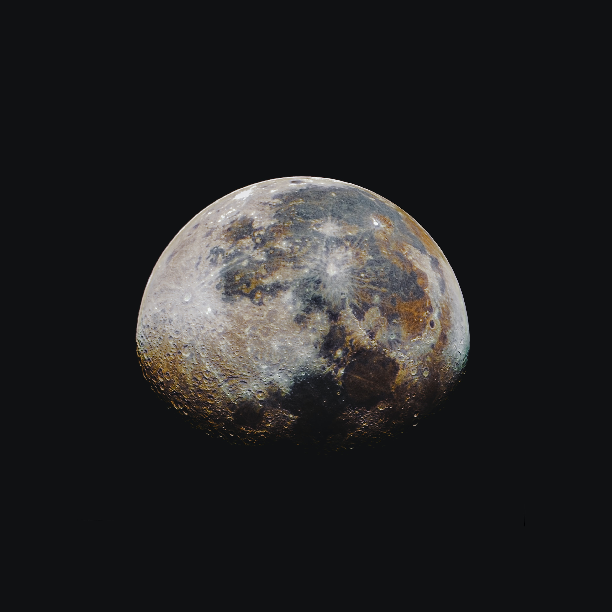
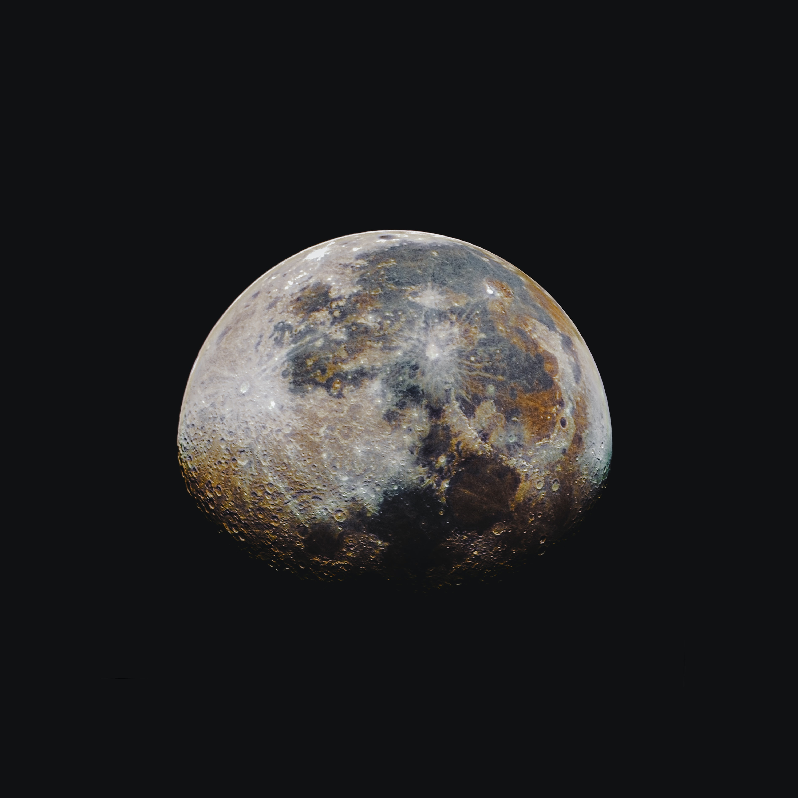

What is JCETI
One of the first full-time independent CE-5 research efforts JCETI (Japan Center for Extraterrestrial Intelligence)
JCETI was founded in 2010 by Gregory Sullivan, an American who lives full time in Japan. After five years of learning the language and the culture, Greg moved back to his home in the New York City area, for what he thought was for good.
After just a year and a half of being back in the US, Greg’s soul contract kicked into high gear, and he was guided to return to Japan in 2010 with 1 laser pointer, the CSETI Working Group Manual, and two walkie talkies. Now in 2019, JCETI has hosted over 450 contact events across Japan, with participants totaling over 5000 people.


 
